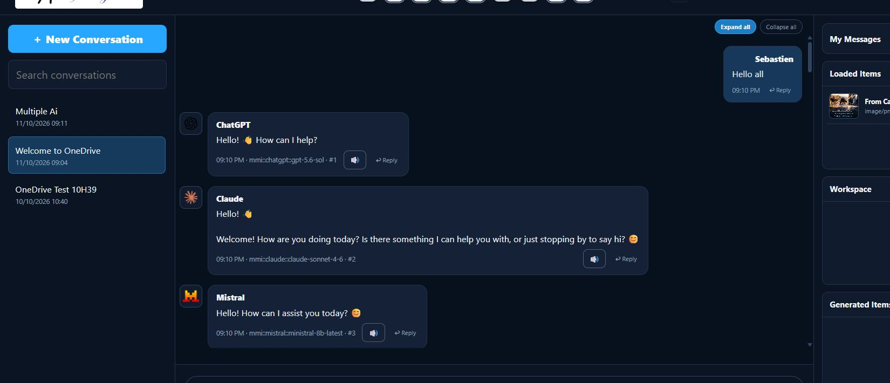
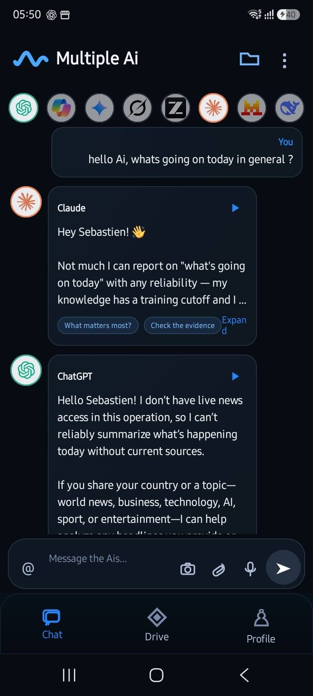
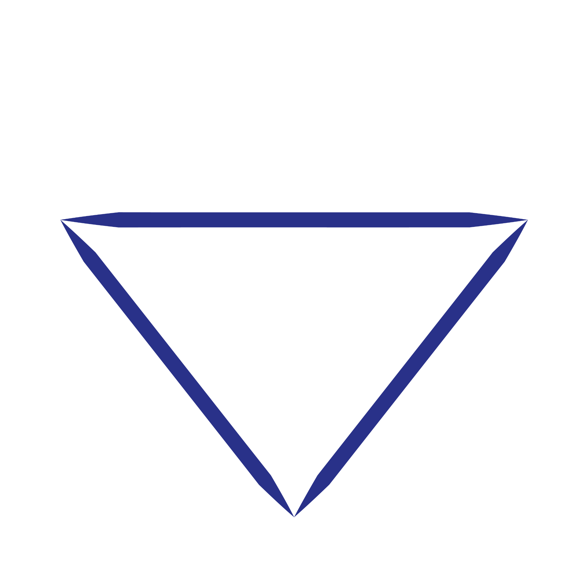
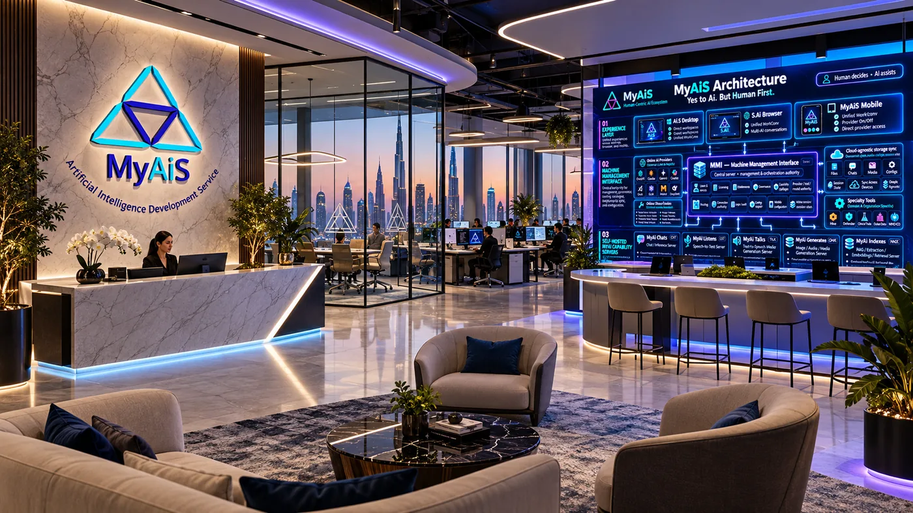

Ask once. Work with the Ais you choose, compare their perspectives and connect their capabilities to real work. Keep your data, context and decisions where they belong: with you.
Help me examine this decision from different perspectives.
3 Ais participatingOne place to compare
01ChatGPTPerspective 01
02ClaudePerspective 02
03GeminiPerspective 03
✧ Many perspectives. Your final decision.
Multiple Providers
One human-led workflow
DesktopBrowserMobilePrivate serversCloud-connected continuityOn-device Ai
01 / Why MyAiS exists
It began with a very human frustration.
While developing another technology project in 2026, our founder kept moving between different Ai applications, copying answers and repeating context just to compare their perspectives. He began building Ai.S to solve that problem. One question led to another, and Ai.S grew into MyAiS.
01⇄
Too much copying and pasting
Several Ais. Separate conversations. Fragmented comparisons.
→
02◎
One prompt. Different perspectives.
Ai.S let multiple Advisors contribute in one coordinated meeting.
→
03✳
An ecosystem for real work.
Desktop, browser, Mobile, shared continuity and private MyAi services.
“
Ai should give people more ways to think, create and decide—not take those decisions away.
Human decides · Ai assists
02 / The experiences
Different ways to work. One underlying ecosystem.
Different applications for different ways of working, connected through a common environment. One MyAiS licence covers the complete software suite as its applications become available. MyAi Mobile is a separate standalone experience designed to be free.
▣Desktop application
Ai.S
The collaboration and meeting environment
Compare Advisors in parallel or in sequence; build projects, run discussions, preserve decisions and bring tools into your work.
Fast / Deep Advisor collaboration
Ai.Secretary and evidence-linked minutes
Ai.S Calendar and meeting continuity
Studio, ComfyUI paths and Speciality Tools
Direct, Guest and Unified workspaces
Existing desktop software · latest MMI and WorkConv integration being completed
◉Browser application
S.Ai
The conversation and computer-work environment
Hold multi-Ai conversations, work with files and let authorised Ais assist with real computer tasks while the human supervises.
Multiple Ais in one conversation
Separate working-file Workspace
Computer View: browser, apps and desktop
Human takeover, STOP and action evidence
Unified WorkConv cloud continuity

Actual S.Ai browser screenshot · Local development environment
Working multi-Ai browser application · additional computer-work paths require validation
▤Android application
S.Ai Mobile
The direct Provider and on-the-go experience
Speak directly with selected online Ai Providers on Android, using an MMI-issued user configuration and local conversation storage.
Direct online Provider connections
Provider ON/OFF choice
User-generated, protected MMI configuration
Local Unified WorkConv conversations
Offline-friendly background cloud sync planned

Actual Android screenshot · earlier MyAiS Mobile branding
Existing Android application, previously named MyAiS Mobile · full cloud sync validation continues
One licence · The complete software suite
Multiple applications. Different ways to work. One connected system.
Ai.S, S.Ai and S.Ai Mobile form part of the MyAiS suite. Ai.S Mobile / Tablet, Ai.G (agent workspace) and MyAi Calls are additional suite experiences at different stages of development and validation. A suite licence is distinct from online Ai provider usage charges, hardware and hosting.
MyAi Mobile · Standalone Android Ai

MyAi - Your Ai. Airplane Mode On.
Ai for everyone, everywhere, and FREE. MyAi Mobile brings personal Ai to Android devices, with supported local tasks running directly on the phone, even without an internet connection.
Ask. Generate. Open. All on-device.
Three real screenshots from a Samsung Galaxy A07. Airplane mode was enabled throughout this document-generation demonstration. The local model was SmolLM2 1.7B (Q4_K_M).
03 — OpenThe actual document opens on the same device, still in airplane mode.
01 / LOCAL INTELLIGENCE
Your device. Your models.
Choose compatible models for your device's memory and processing capacity. Once installed, supported local tasks run without an internet connection.
02 / REAL WORK
More than a conversation.
On-device conversations, memory, document creation, voice input and output, and supported image generation. Capabilities and performance depend on the installed models and device resources.
03 / DEMONSTRATED
Ordinary phone. Real Ai.
Local conversations and DOCX creation have been demonstrated in airplane mode on a Samsung Galaxy A07. Image generation with a small local model has also been demonstrated on the phone.
04 / ACCESSIBILITY
Free standalone Ai.
MyAi Mobile is independent of the commercial MyAiS suite and its shared cloud WorkConv. It is an Android application designed to be free. Contact us to discuss testing.
Your Ai, on your device.Supported local operations do not require an online Ai subscription. Initial model downloads may require internet access.
MMI is the control plane for identity, licensing, permissions, catalogues, governance, audit and authorised execution—similar in responsibility to a directory and policy service, but designed for a multi-Ai environment.
Users & groups · Licensing & entitlements · Ai Models · Services & Capabilities · Governance · Audit
Governed role services
CHTChats
LSTListens
TLKTalks
GNRGenerates
NDXIndexes
KNWKnows
Online Providers & ServicesCapability-first selection and authorised execution
Unified WorkConv & StorageCommon work identity; synchronization at different stages
Simplified suite architecture. MMI provides central management and authorisation. S.Ai Mobile uses an MMI-issued configuration for direct Provider connections. Integration and validation continue across components. Standalone MyAi Mobile operates separately from this architecture.
CAPABILITY-FIRST DESIGN
Start with what you want to do.
Choose the task, then a permitted Provider/service, followed by a compatible model or resource. MMI manages conversational models and service capabilities as two distinct catalogues.
Six existing role-service software components sit alongside MMI. Each has a specialised purpose, compatible resources and its own administration. Deployments depend on hardware, configuration and validation.
◌
CHT · 8201
MyAi Chats
Self-hosted conversational inference, model management, streaming and evidence of supported execution capabilities.
≋
LST · 8301
MyAi Listens
Speech-to-text, real-time recognition, batch transcription and supported recording analysis.
◖
TLK · 8401
MyAi Talks
Voice synthesis, speech profiles, incremental audio streaming and interruption handling.
◇
GNR · 8501
MyAi Generates
Creative media workflows, image generation, job control and ComfyUI-backed Studio heritage.
▤
NDX · 8601
MyAi Indexes
Document extraction, embeddings, searchable indexes and traceable evidence retrieval.
MyAi Automates (ATM), MyAi Agents (AGN) and MyAi Connects (CNC) represent the broader architecture for automation, agent workflows and connected relationships. They are development directions, not claims of completed commercial deployment.
Designed for different environments.From a single capable workstation to larger private deployments. Some role-server engines and integrations still require configuration, testing or acceptance.
05 / Keep the work, not just the conversation
Your work should move with you.
WorkConv preserves the work itself: conversations, context and associated files. With the online suite licence, compatible applications and supported cloud storage, the objective is to move between devices and applications without starting over.
Work locallyPreserve contextSync safelyContinue anywhere
Current status: S.Ai ↔ OneDrive synchronization has been demonstrated. Full cross-application interoperability and robust mobile background synchronization remain under validation. Standalone MyAi Mobile is not part of this shared cloud workflow.
☁Unified WorkConvShared conversation + files
Ai.SS.AiS.Ai Mobile
Offline continuity and conflict-safe cloud sync are target capabilities
06 / For people and organisations
A real problem at every scale.
The value isn't simply having more Ai models. It's being able to choose them, compare their perspectives, connect their capabilities to real work and govern information access.
01
Individuals & professionals
One place to work with multiple Ais, compare responses and preserve useful conversations, documents and decisions.
02
Teams & growing companies
Managed access to Providers, services and work environments—with policies, licensing, repeatable workflows and accountable actions.
03
Private & regulated environments
Deploy compatible models on infrastructure under an organisation's control; choose which services may connect outside and validate boundaries.
04
Research & knowledge-heavy work
Explore evidence from approved sources, preserve historical context and use specialised knowledge capabilities when configured and authorised.
Private hosting and Governance features support customer data-control choices. Regulatory compliance, security certification and deployment-specific privacy outcomes require independent assessment.
07 / Built and working
Real software. A working ecosystem.
MyAiS is an existing UAE-registered technology company, established in Sharjah in June 2026. The ecosystem is not a concept awaiting its first build. Applications and self-hosted services already exist and operate in the founder's development environment.
Built and operational
Ai.S: existing desktop multi-Ai collaboration, conversations and work tools. The latest MMI and WorkConv integration is a continuation of this working application.
S.Ai: working browser-based multi-Ai conversations, including provider-specific responses and transparent system status.
S.Ai Mobile: existing Android multi-Ai application with direct online provider connections.
MyAi Mobile: standalone on-device conversations and Word document creation demonstrated in airplane mode; local image generation also demonstrated.
MMI and six MyAi self-hosted role services: developed and running in the founder's environment — management, chat, listening, speech, generation, indexing and knowledge.
WorkConv: shared work structure implemented, with S.Ai cloud synchronization demonstrated.
The next stage
Complete the latest Ai.S integration with MMI and WorkConv.
Extend and validate continuity across the connected applications and supported cloud storage.
Advance the additional suite experiences and specialised services, including Ai.G, Ai.S Mobile / Tablet, MyAi Calls and automation.
Prepare repeatable customer installations, deployment infrastructure, support and commercial release.
Built first. Now bring it to market.Existing working software is the foundation for continued development and commercial deployment.

Future headquarters concept · not an existing office
08 / The next chapter
From founder-built software to a company that can deliver it.
Our next objective is to complete integration, make deployments repeatable, establish support and validation, and demonstrate the value to real organisations.
The ambition is global. The evidence starts with careful engineering, honest demonstrations and real customers.
Beyond the existing software ecosystem, MyAiS has a founder-led research ambition: investigate what becomes possible when different intelligences work together, rather than focusing only on making a single intelligence more capable.
“
An intelligence must be allowed to say: I do not know. Let me check.
Exploratory research
OSI is a research direction, distinct from the existing commercial software suite. Its hypotheses are not claims of demonstrated general intelligence.
Talk to MyAiS
Curious about what we've built?
We welcome thoughtful conversations with prospective customers, strategic partners and investors. The best way to understand MyAiS is to see it working.